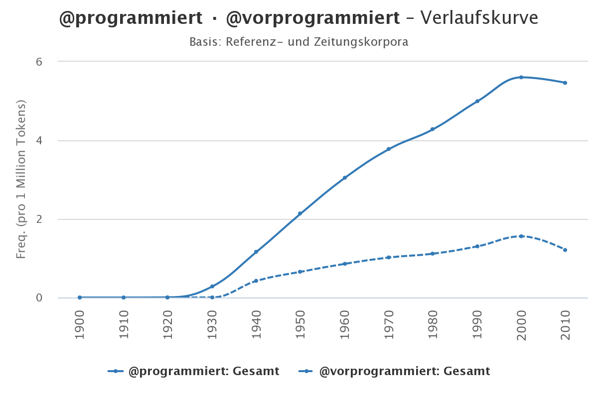
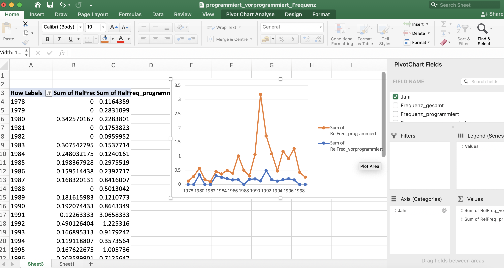
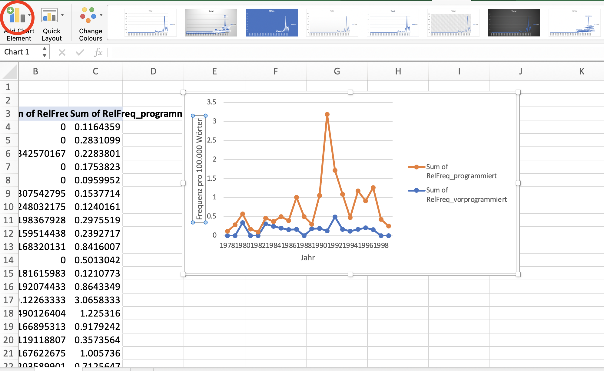

Datenvisualisierung mit Excel
Einfache Balkendiagramme
Liniendiagramme
Im obigen Beispiel konnten wir gut mit Balkendiagrammen arbeiten, weil wir es mit zwei kategorialen Variablen zu tun hatten, die ihrerseits nur wenige Variablenausprägungen aufwiesen: Die Variable “Lemma” hatte zwei Ausprägungen, programmiert und vorprogrammiert, die Variable “Lesart” drei (wörtlich, metaphorisch, unklar). Sobald kontinuierliche Variablen hinzukommen, hat das oben gewählte Vorgehen der Datenaggregation den gravierenden Nachteil, dass Informationen verlorengehen. Wenn wir beispielsweise mit einer Zeitreihe von 1900 bis 2000 arbeiten, könnten wir die Jahreszahlen beispielsweise nach Jahrzehnt gruppieren (1900–1909, 1910–1919 etc.) und damit die kontinuierliche Variable in eine kategoriale überführen, um etwa ein Balkendiagramm nutzen zu können. In manchen Fällen kann das auch sinnvoll sein, etwa wenn man zu wenige Daten hat, um sinnvoll etwas über die einzelnen Jahre aussagen zu können. In den meisten Fällen aber werden wir die zusätzliche Information, die wir dadurch haben, dass Daten für jedes einzelne Jahr vorliegen, nutzen und auch in der graphischen Darstellung sichtbar machen wollen.
Zum Glück gibt es eine Reihe von Visualisierungsmöglichkeiten, die uns genau das erlauben. Eine sehr einfache und weitverbreitete Möglichkeit ist das Liniendiagramm. Angenommen, wir wollen mit Hilfe der DWDS-Korpora die Frequenz von programmiert und vorprogrammiert über das 20. Jahrhundert hinweg, so können wir das z.B. mit Hilfe der auf der DWDS-Website verfügbaren Wortverlaufskurven machen. Das Ergebnis sieht dann so aus:
Aber natürlich wollen wir eine solche Grafik selbst erstellen können und arbeiten deshalb mit den rohen Frequenzdaten, die ich über kaskade.dwds.de/dstar erhoben habe. Wenn Sie sich für die Suchanfragen interessieren, klicken Sie bitte auf "Mehr dazu".
Die Gesamtzahl der Tokens wurde gefunden mit der Suchanfrage count(* #sep) #by[date/1].
Die Frequenz von programmiert und vorprogrammiert wurde gefunden mit count(@programmiert || @vorprogrammiert #sep) #by[$w, date/1].
Sie finden sie in der Datei programmiert_vorprogrammiert_frequenz.xlsx. Die darin enthaltene Tabelle hat vier Spalten: 1. das Jahr, 2. die Gesamtzahl der Tokens, die das Korpus für dieses Jahr enthält, 3. die Frequenz von programmiert im gegebenen Jahr, 4. die Frequenz von vorprogrammiert im gegebenen Jahr.
In Excel können wir mit Hilfe sog. Pivot Charts flexible Visualisierungsmöglichkeiten nutzen.
Dafür klicken wir im Reiter “Einfügen” auf PivotChart und kommen auf die gleiche Übersicht, die wir aus Pivot-Tabellen kennen. Auch hier können wir wieder im Auswahlmenü ganz rechts Häkchen bei den Variablen setzen, die uns interessieren – in unserem Fall “Jahr”, “RelFreq_programmiert” und “RelFreq_vorprogrammiert”. Die beiden Spalten zeigen die Frequenz pro 100.000 Wörter, deshalb sind die Werte etwas anders als in der oben dargestellten Wortverlaufskurve (die z.T. auch auf anderen Daten beruht, da die Wortverlaufskurven-Funktion des DWDS nicht die Möglichkeit bietet, nur das Kernkorpus als Datengrundlage zu nehmen).
In der PivotChart-Ansicht können wir im Reiter “Design” den Diagrammtyp ändern und ein Liniendiagramm auswählen. Wenn wir die Variable “Jahr” nun in das Feld “Achse” und die beiden RelFreq-Spalten in das Feld “Werte” ziehen, erhalten wir ein Liniendiagramm, in dem die beiden Linien getrennt voneinander dargestellt werden. Wir können die Grafik etwas übersichtlicher gestalten, indem wir die Jahre, in denen (vor)programmiert ohnehin nicht belegt ist, herausfiltern, was einfach mit Klick auf das kleine Dreieck am “Jahr”-Feld in der Tabelle ganz links geht.
Bei allen Diagrammen ist es sinnvoll, aussagekräftige Achsenbeschriftungen für die x- und y-Achse hinzuzufügen. Während in unserem Beispiel die Interpretation der x-Achse relativ offensichtlich ist (es handelt sich um Jahre), ist nicht auf den ersten Blick zu erkennen, dass die y-Achse die Frequenz pro 100.000 Wörter zeigt. Das können wir ändern, indem wir im Tab “Design” Chart-Elemente hinzufügen, nämlich horizontale und vertikale Achsentitel.
Excel-Diagramme exportieren
Wenn Sie ein in Excel erstelltes Diagramm in Ihre Arbeit einbauen möchten, ist es sinnvoll, es als Grafikdatei zu exportieren. Es gibt zwar auch die Möglichkeit, das Diagramm einfach z.B. in Word zu copy&pasten, aber mehrere Gründe sprechen dafür, lieber mit einer Bilddatei zu arbeiten – so ist die Bilddatei statisch, während eine in Word gepastete Excel-Grafik oft noch mit der Excel-Tabelle verbunden bleibt, was zur Folge hat, dass sie sich ändert, wenn Sie die Excel-Datei ändern. Das kann praktisch sein, aber auch hinderlich, etwa wenn Sie versehentlich Änderungen in der Excel-Tabelle vornehmen. Und spätestens wenn Sie einmal einen “echten” Aufsatz für eine Zeitschrift oder einen Sammelband schreiben, werden Sie an separaten Bilddateien kaum vorbeikommen.
Leider sind die Exportmöglichkeiten für Grafiken bei Excel eher bescheiden. Ein nicht vollends befriedigender, aber einigermaßen praktikabler Workaround besteht darin, einfach einen Screenshot zu machen. Unter Windows geht das mit dem Programm “Snipping Tool”, das man mit Windows + Umschalt + S aufrufen kann, auf dem Mac funktioniert es mit Cmd + Control + 4 (Screenshot wird gespeichert) oder Cmd + Control + Umschalt + 4 (Screenshot wird in die Zwischenablage kopiert).
Zurück Hauptseite Zu Calc